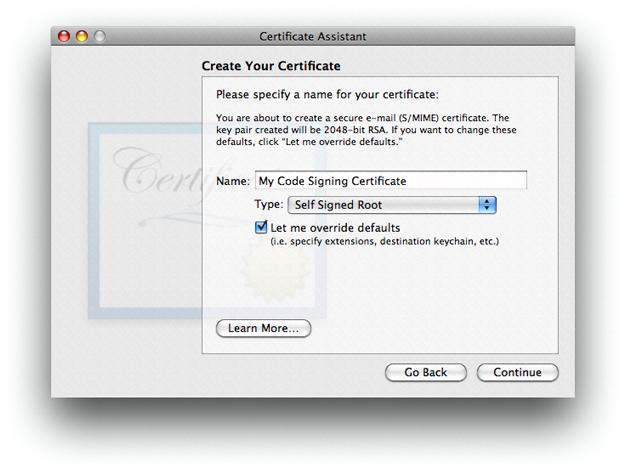
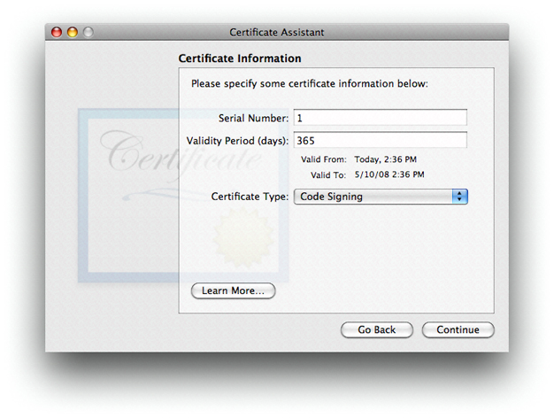
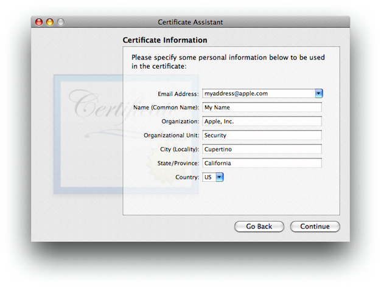

Procedures
This chapter gives procedures and examples for the code signing process. It covers what you need to do before you begin to sign code, how to sign code, and how to ship the code you signed.
In this section:
Obtaining a Signing Identity
Adding an Info.plist to Single-File Tools
Signing Your Code
Shipping and Updating Your Product
Obtaining a Signing Identity
To sign code, you need a code signing digital identity, which is a private cryptographic key plus a digital certificate. The digital certificate must have a usage extension that enables it to be used for signing and it must contain the public key that corresponds to the private key. You can use multiple signing identities if you wish, such as one to be used for beta seeds and one for final, released products. However, most organizations use only one.
You can obtain a signing identity from a certificate authority, such as VeriSign, RSA, or Thawte. If your company already has a code-signing-capable identity that you use to sign code on other systems, you can use it with codesign as well. Apple uses the industry-standard form and format of code signing digital certificates. Some companies are certificate issuing authorities; in this case, you need to contact your IT department to find out how to get a signing certificate issued by your company. However, if the only reason you need a certificate is for a signing identity to use with Mac OS X, you can create your own identity by using the Certificate Assistant, which is provided as part of the Keychain Access application.
Before proceeding to obtain a signing identity and sign your code, consider the following points:
A self-signed certificate created with the Certificate Assistant is not recognized by users’ operating systems as a valid certificate for any purpose other than validating the designated requirement of your signed code. Because a self-signed certificate has not been signed by a recognized root certificate authority, the user can only verify that two versions of your application came from the same source; they cannot verify that your company is the true source of the code. For more information about root authorities, see Security Concepts.
Depending on your company’s internal policies, you might have to involve your company’s Build and Integration, Legal, and Marketing departments in decisions about what sort of signing identity to use and how to obtain it. You should start this process well in advance of the time you need to actually sign the code for distribution to customers.
Any signed version of your code that gets into the hands of users will appear to have been endorsed by your company for use. Therefore, you might not want to use your “final” signing identity to sign code that is still in development.
A signing identity, no matter how obtained, is completely compromised if it is ever out of the physical control of whoever is authorized to sign the code. That means that the signing identity’s private key must never, under any circumstances, be given to end users, and should be restricted to one or a small number of trusted persons within your company. Before obtaining a signing identity and proceeding to sign code, you must determine who within your company will possess the identity, who can use it, and how it will be kept safe. For example, if the identity must be used by more than one person, you can keep it in the keychain of a secure computer and give the password of the keychain only to authorized users, or you can put the identity on a smart card to which only authorized users have the PIN.
A self-signed certificate created by the Certificate Assistant is adequate for internal testing and development, regardless of what procedures you put in place to sign released products.
To use the Certificate Assistant to create a signing identity, use the following procedure:
Open Applications > Utilities > Keychain Access.
From the Keychain Access menu, choose Certificate Assistant > Create a Certificate.
Fill in a name for the certificate. This name appears in the Keychain Access utility as the name of the certificate.
Choose
Self Signed Rootfrom theTypepopup menu.Check the
Let me override defaultscheckbox. ClickContinue.Specify a serial number for the certificate. Any number will do as long as you have no other certificate with the same name and serial number.
Choose
Code Signingfrom theCertificate Typepopup menu. ClickContinue.Fill in the information for the certificate. Click
Continue.Accept the defaults for the rest of the dialogs.
Adding an Info.plist to Single-File Tools
As discussed in “Code Requirements,” the system often uses the Info.plist file of an application bundle to determine the code’s designated requirement. Although single-file tools don’t normally have an Info.plist, you can add one. To do so, use the following procedure:
Add an
Info.plistfile to your project (including adding it to your source control).Make sure the
Info.plistfile has the following keys:CFBundleIdentifierCFBundleName
The value for
CFBundleIdentifiermust be unique; it is used as the default unique name of your program for Code Signing purposes. To ensure uniqueness, you can include your company’s name in the value. The usual form for this identifier is a hierarchical name in reverse DNS notation, starting with the company name, followed by the organization in the company, and ending with the product name. For example, the identifier for thecodesigntool iscom.apple.security.codesign.The value for
CFBundleNameshows up in system dialogs as the name of your program, so it should correspond to your marketing name for the product.Add the following arguments to your link command:
-sectcreate __TEXT __info_plistInfo.plist_pathwhere Info.plist_path is the path to the
Info.plistfile in your project.In Xcode, use the
OTHER_LDFLAGSbuild variable.
For example, here are the contents of the Info.plist file of the codesign tool.:
<plist version="1.0"> |
<dict> |
<key>CFBundleDevelopmentRegion</key> |
<string>English</string> |
<key>CFBundleIdentifier</key> |
<string>com.apple.security.codesign</string> |
<key>CFBundleInfoDictionaryVersion</key> |
<string>6.0</string> |
<key>CFBundleName</key> |
<string>codesign</string> |
<key>CFBundleVersion</key> |
<string>0.3</string> |
</dict> |
</plist> |
Signing Your Code
You use the codesign command-line tool to sign your code. This section discusses what to sign and gives some examples of the use of codesign. See the codesign(1) manual page for a complete description of its use.
What to Sign
You should sign every program in your product, including applications, tools, hidden helper tools, utilities and so forth. Signing an application bundle covers its resources, but not its subcomponents such as tools and sub-bundles. Each of these must be signed independently.
If your application consists of a big UI part with one or more little helper tools that try to present a single face to the user, you can make them indistinguishable to code signing by giving them all the exact same code signing identifier. (You can do that by making sure that they all have the same CFBundleIdentifier value in their Info.plist, or by using the -i option in the codesign utility, to assign the same identifier.) In that case, all your program components have access to the same keychain items and validate as the same program. Do this only if the programs involved are truly meant to form a single entity, with no distinctions made.
A universal binary (bundle or tool) automatically has individual signatures applied to each architecture component. These are independent, and usually only the native architecture on the end user's system is verified.
In the case of installer packages (.pkg and .mpkg bundles), everything is implicitly signed: The CPIO archive containing the payload, the CPIO archive containing install scripts, and the bill of materials (BOM) each have a hash recorded in the XAR header, and that header in turn is signed. Therefore, if you modify an install script (for example) after the package has been signed, the signature will be invalid.
You may also want to sign your plugins and libraries. Although this is not currently required, it will be in the future, and there is no disadvantage to having signatures on these components.
Depending on the situation, codesign may add to your Mach-O executable file, add extended attributes to it, or create new files in your bundle's Contents directory. None of your other files is modified.
When to Sign
You can run codesign at any time on any system running Mac OS X v10.5 or later, provided you have access to the signing identity. You can run it from a shell script phase in Xcode if you like, or as a step in your Makefile scripts, or anywhere else you find suitable. Signing is typically done as part of the product mastering process, after quality assurance work has been done. Avoid signing pre-final copies of your product so that no one can mistake a leaked or accidentally released incomplete version of your product for the real thing.
Your final signing must be done after you are done building your product, including any post-processing and assembly of bundle resources. Code signing detects any change to your program after signing, so if you make any changes at all after signing, your code will be rejected when an attempt is made to verify it. Sign your code before you package the product for delivery.
Because each architecture component is signed independently, it is all right to perform universal-binary operations (such as running the lipo command) on signed programs. The result will still be validly signed as long as you make no other changes.
Using the codesign Utility
The codesign command is fully described in the codesign(1) manual page. This section provides some examples of common uses of the command. Note that your signing identity must be in a keychain for these commands to work.
Signing Code
To sign the code located at code-path, using the signing identity identity, use the following command:
codesign -s identity code-path ...
Signing identities are discussed in “Obtaining a Signing Identity.”
As is typical of Unix-style commands, this command gives no confirmation of success. To get some feedback, include the -v option:
codesign -s -v identity code-path ...
The identity can be named with any (case sensitive) substring of the certificate's common name attribute, as long as it's unique throughout your keychains.
Use the -r option to specify an internal requirement. With this option you can specify a text file containing the requirements, a precompiled requirements binary, or the actual requirement text prefixed with an equal sign (=). For example, to add an internal requirement that all libraries be signed by Apple, you could use the following option:
-r="library => anchor apple" |
The code requirement language is described in “Code Signing Requirement Language.”
If you have built your own certificate hierarchy (perhaps using Certificate Assistant—see “Obtaining a Signing Identity”), and want to use your certificate’s anchor to form a designated requirement for your program, you could use the following command:
codesign -s signing-identity -r="designated => anchor /my/anchor/cert and identifier com.mycorp.myprog" |
Note that the requirement source language accepts either an SHA1 hash of a certificate (for example H"abcd....") or a path to the DER encoded certificate in a file. It does not currently accept a reference to the certificate in a keychain, so you have to export the certificate before executing this command.
You can also use the csreq utility to write the requirements out to a file, and then use the path to that file as the input value for the -r option in the codesign utility. See the manual page for csreq(1) for more information on that utility.
Here are some other samples of requirements:
anchor apple–the code is signed by Appleanchor trusted–the anchor is trusted (for code signing) by the systemcertificate leaf = /path/to/cert–the leaf (signing) certificate is the one specifiedcertificate leaf = /path/to/cert and identifier "com.mycorp.myprog"–the leaf certificate and program identifier are as specifiedinfo[mykey] = myvalue– theInfo.plistkeymykeyexists and has the valuemyvalue
Except for the explicit anchor trusted requirement, the system does not consult its trust settings database when verifying a code requirement. Therefore, as long as you don’t add this designated requirement to your code signature, the anchor certificate you use for signing your code does not have to be introduced to the user’s system for validation to succeed.
Verifying Code
To verify the signature on a signed binary, use the -v option with no other options:
codesign -v code-path ...
This checks that the code binaries at code-path are actually signed, that the signature is valid, that all the sealed components are unaltered, and that the whole thing passes some basic consistency checks. It does not by default check that the code satisfies any requirements except its own designated requirement. To check a particular requirement, use the -R option. For example, to check that the Apple Mail application is identified as Mail, signed by Apple, and secured with Apple’s root signing certificate, you could use the following command:
codesign -v -R="identifier com.apple.mail and anchor apple" /Applications/Mail.app |
Note that, unlike the -r option, the -R option takes only a single requirement rather than a requirements collection (no => tags). Add one or more additional -v options to get details on the validation process.
If you pass a number rather than a path to the verify option, codesign takes the number to be the process ID (pid) of a running process, and performs dynamic validation instead.
Getting Information About Code Signatures
To get information about a code signature, use the -d option. For example, to output the code signature’s internal requirements to standard out, use the following command:
codesign -d -r- code-path |
Note that this option does not verify the signature.
Shipping and Updating Your Product
The only thing that matters to the code signing system is that the signed code installed on the user’s system identical to the code that you signed. It does not matter how you package, deliver, or install your product as long as you don’t introduce any changes into the product. Compression, encoding, encrypting, and even binary patching the code are all right as long as you end up with exactly what you started with. You can use any installer you like, as long as it doesn't write anything into the product as it installs it. Drag-installs are fine as well.
When you have qualified a new version of your product, sign it just as you signed the previous version, with the same identifier and the same designated requirement. The user’s system will consider the new version of your product to be the same program as the previous version. In particular, the keychain will not distinguish older and newer versions of your program as long as both were signed and the unique Identifier hasn't changed.
You can take a partial-update approach to revising your code on the user’s system. To do so, sign the new version as usual, then calculate the differences between the new and the old signed versions, and transmit the differences. Because the differences include the new signature data, the result of installing the changes on the end-user's system will be the newly signed version. You cannot patch a signed application in the field. If you do so, the system will notice that the application has changed and will invalidate the signature, and there is no way to re-validate or resign the application in the field.
© 2008 Apple Inc. All Rights Reserved. (Last updated: 2008-11-19)